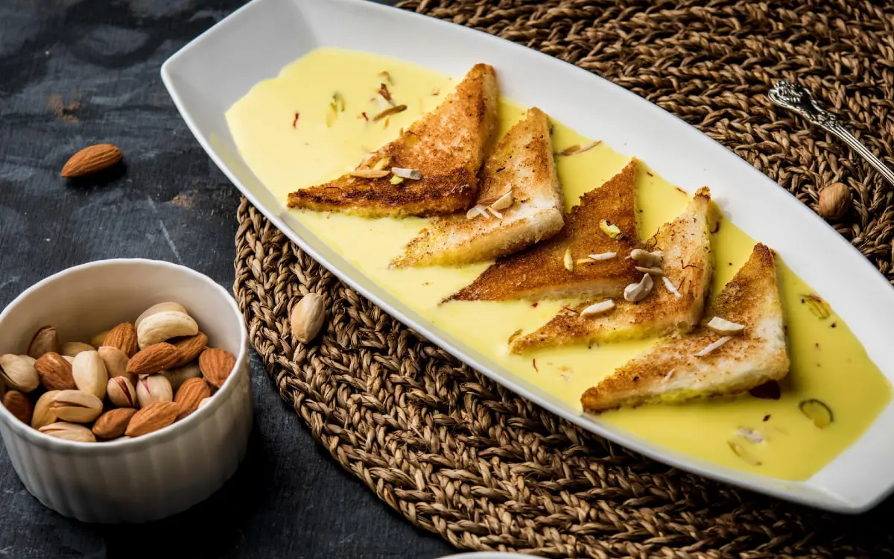

Shahi Tukda (Step by Step)

Shahi Tukra (with Condensed Milk), a popular hyderabadi special sweet is
a
royal treat to taste buds at anytime. To make this sweet in authentic
style, bread pieces are deep fried in ghee until crispy and then topped
with creamy rabri. In this recipe, bread pieces are shallow fried
(toasted) to reduce the calorie and condensed milk and grated paneer are
used to make the rich and creamy rabri. This simple and easy to prepare
dessert cum sweet has nice flavor of saffron and cardamom and tastes
delicious either warm or chilled.
Ingredient: |
| 2½ cups full fat milk |
| 1/4 cup Sweet Condensed Milk |
| 1 tablespoon Sugar |
| 4-5 Saffron strands (kesar) |
| 2 tablespoons grated Paneer or Khoya (mawa) or Milk Powder, optional |
| 1/4 teaspoon Cardamom (Elaichi) Powde |
| 4 White Bread Slices (or brown bread) |
| 2-3 tablespoons Ghee (clarified butter), for shallow frying |
| 1/2 tablespoon chopped Cashew Nuts |
| 1/2 tablespoon chopped Pistachio |
| 1/2 tablespoon chopped Almonds |
Direction:

.jpg)

Taste: Sweet and yummy in every bite. |